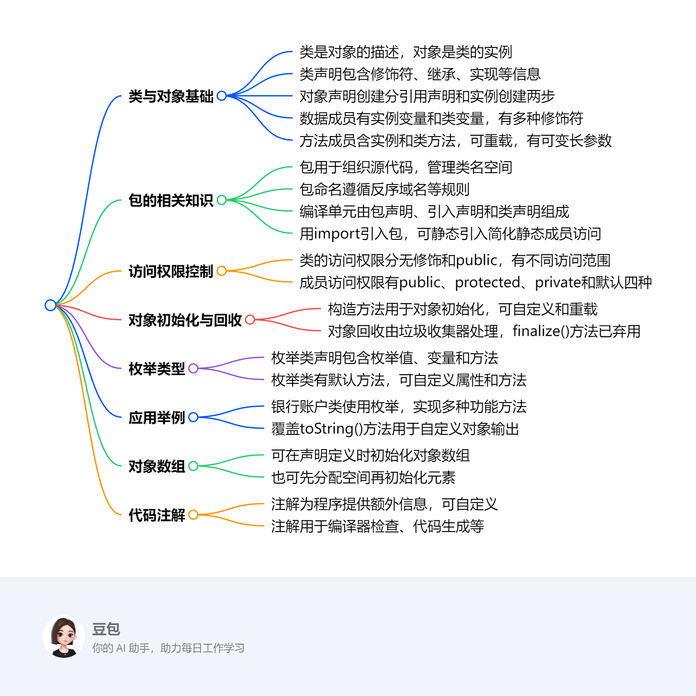

第二章：类与对象¶
该文档围绕Java语言中类与对象展开，涵盖基础概念、对象操作、枚举类型、应用实例、对象数组及代码注解等内容，是Java编程基础的重要知识总结。
- 类与对象基础
- 类与对象关系：类是对一类对象的描述，对象是类的具体实例。
- 类声明：格式为
[public] [abstract | final] class类名称 [extends父类名称] [implements接口名称列表]{...}，extends用于继承父类，implements用于实现接口 。public、abstract、final分别表示公有类、抽象类、终结类。 - 对象声明与创建：声明引用变量
类名 引用变量名;，创建对象使用new <类名>()，new用于分配内存空间并返回对象引用，引用变量可赋值为null。 - 数据成员：表示对象状态（实例变量）或类共享数据（类变量）。声明语法
[访问控制符][static][final][transient][volatile]数据类型变量名[=变量初值]。实例变量无static修饰，类变量用static修饰。 - 方法成员：语法
[访问控制符][static][final][abstract][native][synchronized]返回类型方法名([参数列表]) [throws exceptionList]{方法体}。实例方法表示特定对象行为，类方法表示类中对象共有行为，可通过类名或实例调用。方法重载指一个类中多个同名方法，参数不同。可变长参数用省略号表示，本质是数组。
- 包
- 作用：组织相关源代码文件，管理类名空间，提供封装和存取权限。
- 命名：建议反序机构Internet域名作为前导，遵循一定规则处理特殊字符。
- 编译单元：由包声明、
import声明、类和接口声明组成，一个编译单元最多有一个public类，且类名与文件名相同。 - 引入包：使用
import语句，java.lang包自动引入。静态引入用于简化静态成员访问。
- 类和成员的访问权限控制
- 类访问权限：无修饰时同一包内可访问，
public修饰时不同包也可访问。 - 成员访问权限：
public可被任意方法访问；protected可被子类和同一包中其他类访问；private仅同一类中可访问；默认权限仅同一包内可访问。
- 类访问权限：无修饰时同一包内可访问，
- 对象初始化和回收
- 构造方法：方法名与类名相同，无返回类型，通常
public修饰，用于对象初始化。可自定义构造方法，可重载，若未显式声明，编译器生成默认构造方法。 - 对象回收：无用对象（离开作用域或无引用指向）由垃圾回收器回收内存，回收前会调用
finalize()方法（Java 9开始弃用），建议实现AutoCloseable接口的close方法替代。
- 构造方法：方法名与类名相同，无返回类型，通常
- 枚举类型
- 声明：
[public] enum枚举类型名称 [implements接口名称列表]{枚举值;...}，枚举定义实际是定义类，继承自java.lang.Enum，构造方法为包内私有或私有。 - 默认方法：
values()获取枚举值数组，toString()返回字符串描述，valueOf()将字符串转为枚举对象，ordinal()获取位置索引。
- 声明：
- 应用举例：以银行账户类为例，展示了枚举类型的应用、方法覆盖、存取款方法实现、数据格式化以及静态工厂方法的使用等。
- 对象数组：可在声明定义时初始化，也可先分配空间再给元素分配空间。
- 代码注解：通过元数据为程序提供额外信息，可用于编译器检查错误、生成代码等。Java提供预定义注解，也支持自定义注解。 
类声明与对象创建¶
提示语¶
- 类和对象是怎样的关系：类是对一类对象的描述，它定义了对象共有的属性（数据成员）和行为（方法成员）；对象则是类的具体实例，每个对象都具有类所定义的属性和行为，不同对象的属性值可以不同。比如，“圆”类定义了半径属性和计算周长、面积的方法，而具体的某个圆对象，如半径为5的圆，就是“圆”类的一个实例，它具有“圆”类定义的属性和行为 。
- Java中对象的声明和创建是怎么回事：对象声明是指声明一个引用变量，语法为“类名 引用变量名;”，此时并没有生成对象，只是定义了一个用于存储对象引用的变量，例如“Clock aclock;”。对象创建使用“new <类名>()”的语法，“new”的作用是在内存中为指定类型的对象分配内存空间，并返回对象的引用，如“aclock = new Clock();”，这样就创建了一个“Clock”类的对象，并将其引用赋值给“aclock”变量。
- Java中的引用和C++的指针有什么区别和联系
- 联系：两者都用于指向内存中的数据，在一定程度上都能实现对对象的间接访问。
- 区别：Java中的引用不能进行算术运算，如不能像C++指针那样进行指针的加减操作；Java的引用由系统自动管理内存，无需手动释放，避免了指针悬空和内存泄漏等问题，而C++中需要程序员手动管理指针所指向的内存，若操作不当易出现内存问题；Java引用在使用前必须初始化，C++指针可以先不初始化，但未初始化的指针使用时容易引发错误。
- 几种不同的类修饰public、abstract、final有什么不同
- public：表明此类为公有类，在不同包中的类只要对其所在包有访问权限，就能访问该类。
- abstract：指明此类为抽象类，抽象类不能被实例化，通常包含抽象方法（只有方法声明，没有方法体），用于定义一些具有共性的行为或属性，但具体实现由子类完成，它为子类提供了一个通用的框架。
- final：指明此类为终结类，不能被继承，即不能有子类，常用于一些不希望被修改或扩展的类，如Java中的
String类。
- extends和implements之间有什么区别和联系
- 联系：两者都用于建立类之间的关系，都能让一个类获取其他类或接口的属性和方法。
- 区别：“extends”用于类的继承，一个类只能继承一个直接父类，通过继承可以复用父类的代码，子类可以对父类的方法进行重写；“implements”用于类实现接口，一个类可以实现多个接口，接口中定义的方法必须在实现类中全部实现，接口主要用于实现多态性，让不同类实现相同的接口，以统一的方式进行调用。
- public类是什么意思：public类即公有类，具有最高的访问权限。只要对该类所在包有访问权限，不同包中的类都能访问它。它常用于定义一些供外部广泛使用的类，如程序的主类、工具类等。
- 为什么说一个java源文件中最好只有一个public类：因为Java源文件的编译结果是每个类生成一个对应的
.class文件，public类的类名必须与源文件名相同。若一个源文件中有多个public类，就会出现多个类名与文件名冲突的情况，导致编译错误。此外，从代码结构和可读性角度看，一个源文件一个public类，能使代码结构更清晰，便于维护和管理。
该部分内容主要介绍了Java中类与对象的基础概念，包括类与对象的关系、类声明、对象声明与创建等，具体内容如下：
类与对象的关系¶
类是对一类对象的描述，对象是类的具体实例。比如现实世界中，“人”可以看作一个类，而具体的某个人，如“张三”就是“人”这个类的一个对象。
类声明¶
- 基本格式：
[public] [abstract | final] class类名称 [extends父类名称] [implements接口名称列表]{数据成员声明及初始化；方法声明及方法体；}。 - 关键部分解释：
class表明其后声明的是一个类；extends用于指定所声明的类从某一父类派生而来，父类名写在其后；implements用于声明类要实现的接口，接口名写在其后；public表明此类为公有类，可被其他类广泛访问；abstract指明此类为抽象类，通常包含未实现的抽象方法；final指明此类为终结类，不能被继承。 - 示例：在例2 - 1钟表类
public class Clock中，声明了hour、minute、second等变量成员和setTime、showTime等方法成员 。
对象声明与创建¶
- 对象引用声明：语法为
类名 引用变量名;，如声明Clock aclock;，此时仅声明了一个用于存储Clock类对象引用的变量，并没有生成实际对象。 - 对象的创建：语法形式为
new <类名>()，例如aclock = new Clock()。new的作用是在内存中为指定类类型的对象分配内存空间，并返回对象的引用。引用变量可以被赋以空值，如aclock = null;。 - 对象与对象的引用关系：实际操作对象是通过指向对象的“引用”进行的，就像用遥控器操纵电视机，遥控器类比引用，电视机类比对象。引用和对象可以单独存在，但使用时需要建立两者的关联 。
数据成员¶
提示语¶
public、protected、private成员的含义及举例public（公有）：可以被其他任何方法访问（前提是对类成员所属的类有访问权限）。例如在银行账户类BankAccount中，如果将getBalance方法声明为public，那么其他类的对象只要能访问到BankAccount类的实例，就可以调用getBalance方法获取账户余额。protected（保护）：只可被其子类和同一包中其他类的方法访问。假设有一个Employee类和它的子类Manager类在同一个包中，Employee类中声明为protected的salary变量，Manager类可以访问和使用这个变量，同一包中的其他类如果有合适的方法也能访问，但不同包中的非子类则无法访问。private（私有）：只可被同一类的方法访问。如在Circle类中，将radius变量声明为private，在其他类中就不能直接访问radius变量的值。若CircumferenceTester类中试图直接访问Circle类的private变量radius，编译时会报错 ，提示“radius has private access in Circle” 。如果要允许其他类访问radius的值，需要在Circle类中声明相应的公有get和set方法。
static、final、transient、volatile成员的含义static（静态）：修饰的成员变量为类变量，为该类的所有对象共享，在整个类中只有一个值，类初始化时就被赋值；修饰的方法为类方法，表示类中对象的共有行为。如Circle类中的PI变量用static修饰，它就是一个类变量，所有Circle类的实例共享这个PI值；Converter类中的centigradeToFahrenheit方法用static修饰，它是一个类方法，可以通过类名直接调用 。final（最终的）：修饰变量时，表明该变量的值不能被修改。实例变量和类变量都可被声明为final，final实例变量可以在类中定义时给出初始值，或者在每个构造方法结束之前完成初始化；final类变量必须在声明的同时初始化。例如在一个数学计算类中，可以定义final double E = 2.71828;，这里的E就是一个final类变量，其值不可改变。transient（瞬态）：指明变量是不需要序列化的（在保存文件、网络传输时）。比如在一个包含敏感信息（如密码）的类中，如果不想让密码在序列化时被保存或传输，可以将存储密码的变量声明为transient。volatile（易变的）：指明变量是一个共享变量，用于解决多线程环境下变量可见性问题。当一个变量被volatile修饰时，线程在读取该变量时会从主内存中读取最新的值，而不是从线程的工作内存中读取，确保了多线程之间变量的一致性。
static成员和对象成员之间的区别举例- 以
Circle类为例，static double PI = 3.14159265是类变量（static成员），所有Circle类的对象共享这个PI值，在内存中只有一份存储。当通过Circle.PI或new Circle().PI访问时，获取的都是同一个值。而int radius是实例变量（对象成员），每个Circle类的对象都有自己独立的radius值，不同对象的radius值可以不同 。比如创建两个Circle对象c1和c2，c1.radius和c2.radius可以分别被设置为不同的值。 - 从访问方式上，类变量（
static成员）既可以通过类名访问（如Circle.PI），也可以通过对象访问（如new Circle().PI）；而实例变量（对象成员）只能通过对象访问（如c1.radius）。类方法（static修饰的方法）不能访问实例变量，因为类方法不依赖于具体的对象实例，编译器不知道访问的是哪个实例变量 。例如在一个类中，如果有static void classMethod() { // 这里不能访问实例变量 }，而实例方法可以访问类变量，因为实例方法是针对具体对象的，在对象存在的情况下，类变量也必然存在 。
- 以
该部分内容主要介绍了Java中数据成员的相关知识，包括数据成员声明、实例变量和类变量，具体内容如下：
数据成员声明¶
- 语法形式：由访问控制符、修饰符、数据类型、变量名和初值组成，例如
[public | protected | private] [static][ final][transient] [volatile] 数据类型 变量名1[=变量初值], 变量名2[=变量初值], … ;。 - 修饰符说明：
public、protected、private用于控制成员的访问权限；static表示静态成员变量（类变量），为类的所有对象共享；final修饰的变量值不可修改；transient表明变量不需要序列化；volatile说明变量是共享变量 。 - 初始化赋值：对象创建时，系统会自动为成员变量进行初始化赋值，不同数据类型有不同的默认初始值，如
int类型初始值为0，引用类型初始值为null。
实例变量¶
- 定义：没有
static修饰的数据成员就是实例变量。 - 特点：用于存储每个实例都需要的属性，但不同实例的属性值可以不同。
- 访问方式：通过
<实例名>.<实例变量名>的表达式来访问实例变量的值。例如在圆类Circle中，radius是实例变量，可通过Circle类的对象来访问它，如Circle x = new Circle(); x.radius。在ShapeTester类中，创建Circle对象x后，System.out.println("radius = " + x.radius);可以输出x对象的radius值，由于未对radius赋值，输出结果为初始值0。
类变量（静态变量）¶
- 定义与特点：用
static修饰，为类的所有对象共享，在整个类中只有一个值，类初始化时被赋值 。 - 适用场景：适用于类中所有对象都相同的属性、经常需要共享的数据以及系统中的常量值。例如在
Circle类中，PI作为圆周率是一个常量，被定义为类变量，所有Circle类的对象都共享这个PI值 。 - 引用格式：既可以通过类名
<类名>.<类变量名>，也可以通过实例名<实例名>.<类变量名>来引用类变量。在ClassVariableTester类中，Circle x = new Circle();创建了Circle类的对象x，通过x.PI和Circle.PI都能访问到PI这个类变量，修改Circle.PI的值后，再次通过x.PI和Circle.PI访问，得到的是修改后的值 。
方法成员¶
提示语¶
public、protected、private方法成员的含义及举例public（公有）：表示该方法可以被其他任何具有访问该类权限的方法访问。在银行账户类BankAccount中，getBalance方法若声明为public，其他类的对象只要能访问到BankAccount类的实例，就能调用getBalance获取账户余额。protected（保护）：该方法只可被其子类和同一包中其他类的方法访问。假设有Employee类和子类Manager在同一包中，Employee类中声明为protected的calculateSalary方法，Manager类可以访问和使用，同一包中的其他类若有合适的方法也能访问，但不同包中的非子类则无法访问。private（私有）：意味着该方法只可被同一类的其他方法访问。如在Circle类中，若将计算圆面积的辅助方法private double calculateAreaHelper()声明为private，则只有Circle类中的其他方法可以调用它，其他类无法调用。
static、final、abstract、native、synchronized方法成员的含义static（静态）：修饰的方法为类方法，表示类中对象的共有行为。它不依赖于具体的对象实例，可以通过类名直接调用。如Converter类中的centigradeToFahrenheit方法，用static修饰，可通过Converter.centigradeToFahrenheit(40)调用 。final（最终的）：修饰的方法不能被重写。在一个图形绘制类Shape中，如果定义final void draw()方法，那么继承自Shape的子类不能再重新定义draw方法。abstract（抽象的）：修饰的方法只有方法声明，没有方法体，必须在抽象类中，且子类必须重写该方法。例如在抽象类AbstractShape中定义abstract void draw();，具体的Circle类或Rectangle类继承AbstractShape后，必须实现draw方法。native（本地的）：用于集成Java代码和其他语言（如C、C++）的代码，表明该方法的实现是由其他语言编写的。例如在一些性能要求较高的场景中，可能会使用native方法调用C语言编写的底层算法。synchronized（同步的）：用于控制多个并发线程对共享数据的访问，确保同一时刻只有一个线程可以执行该方法，避免数据竞争和不一致问题。在多线程访问共享资源的场景中，如多个线程同时对一个银行账户进行存取款操作，可将相关方法声明为synchronized。
static方法（类方法）成员和对象（实例）方法成员的区别举例- 以
Circle类为例，static double PI = 3.14159265是类变量，与之相关的static方法不能访问实例变量。假设Circle类有static void printPI()方法，在该方法中不能访问实例变量radius。而实例方法如double circumference()可以访问类变量PI和实例变量radius，因为实例方法是针对具体对象的，在对象存在的情况下，类变量和实例变量都可访问。 - 从调用方式上，
static方法（类方法）既可以通过类名调用（如Circle.printPI()），也可以通过对象调用（如new Circle().printPI()），但推荐使用类名调用；实例方法只能通过对象调用（如Circle c = new Circle(); c.circumference()）。
- 以
- 类方法和实例方法的调用方式及区别举例
- 调用方式：类方法可以通过类名直接调用，如
Converter.centigradeToFahrenheit(40)；实例方法需要先创建对象，然后通过对象来调用，如Circle c = new Circle(); c.circumference()。 - 区别：类方法不依赖于具体的对象实例，在类加载时就可以使用；实例方法依赖于具体的对象，只有在对象创建后才能调用。类方法不能访问实例变量和实例方法，因为它不与特定对象关联；实例方法可以访问类变量和实例变量。
- 调用方式：类方法可以通过类名直接调用，如
- 方法重载时区分不同方法的方式及函数签名的含义
- 区分方式：在一个类中，方法重载指多个方法名字相同，但参数必须不同，可以是参数数量不同，如
void receive(int i)和void receive(int i, int j)；也可以是参数类型不同，如void receive(int i)和void receive(double d)；参数顺序不同（不推荐）也可区分，但容易造成混淆。 - 函数签名含义：函数签名是指方法的名称和参数列表（包括参数的数量、类型和顺序），不包括返回类型。在方法重载中，Java通过函数签名来辨别不同的方法，只要函数签名不同，就可以是同名的不同方法 。
- 区分方式：在一个类中，方法重载指多个方法名字相同，但参数必须不同，可以是参数数量不同，如
- 梳理类方法、类变量；实例方法、实例变量的关系
- 类方法与类变量：类方法可以直接访问类变量，因为类变量是类的共享数据，与类方法一样不依赖于具体对象。如在
Circle类中，类方法可以访问类变量PI。类方法不能访问实例变量，因为实例变量属于具体的对象，类方法不与特定对象关联。 - 实例方法与实例变量：实例方法可以访问实例变量，因为实例方法是针对具体对象的行为，需要操作对象的属性（实例变量）。例如在
Circle类的circumference实例方法中可以访问实例变量radius。实例方法也可以访问类变量，因为类变量在类加载后就存在，实例方法在对象创建后可访问类变量。
- 类方法与类变量：类方法可以直接访问类变量，因为类变量是类的共享数据，与类方法一样不依赖于具体对象。如在
实例方法¶
- 定义与特点：表示特定对象的行为，声明时前面不加
static修饰符。例如在圆类Circle中，circumference方法用于计算圆的周长，它依赖于具体的Circle对象，不同对象的radius不同，计算出的周长也不同 。 - 调用方式：通过
<对象名>.<方法名>（［参数列表］）的格式调用，对象名为消息的接收者。如在CircumferenceTester类中，Circle c1 = new Circle(); c1.radius = 50; double circumference1 = c1.circumference();，通过c1对象调用circumference方法计算周长 。 - 参数传递：参数类型为基本数据类型时采用值传递，为对象类型或数组时采用引用传递。
方法重载¶
- 定义：一个类中存在多个名字相同但参数不同的方法，Java通过参数列表（参数数量、类型、顺序）的不同来辨别这些重载方法，返回值类型可以相同也可以不同。
- 作用：允许使用一个方法名访问多个方法，方便对不同数据类型进行相似操作。如在
MethodOverloading类中，定义了多个receive方法，分别接收不同类型和数量的参数 。在Examp3_17类的main方法中，通过MethodOverloading m = new MethodOverloading(); m.receive(2); m.receive(5.6);等代码，展示了对不同重载方法的调用。
类方法（静态方法）¶
- 定义与特点：表示类中对象的共有行为，声明时需加
static修饰，不能被声明为抽象的。例如在Converter类中，centigradeToFahrenheit方法用于将摄氏温度转换为华氏温度，它不依赖于具体的Converter对象实例，可通过类名直接调用 。 - 调用方式：既可以通过类名直接调用，如
Converter.centigradeToFahrenheit(40)；也可以通过类实例调用，但通常推荐使用类名调用。 - 限制：类方法不能访问实例变量，也不能调用实例方法，因为类方法不与特定对象关联，编译器无法确定要访问哪个实例的变量或方法。
可变长参数¶
- 定义：使用省略号表示，实质是数组。例如
String … s等同于String[] s。 - 参数传递：传递给可变长参数的实际参数可以是零个到多个对象。在
VarArgTester类的maxArea方法中，Rectangle... varRec就是可变长参数，在main方法中调用maxArea方法时，可以传递不同数量的Rectangle对象 。
包¶
该节内容围绕Java中包的相关知识展开，涵盖包的定义、作用、命名、编译单元、声明、与目录的关系、引入包以及静态引入等方面，具体总结如下：
- 包的定义与组成：包是一组类的集合，一个包能包含多个类文件，还可包含其他包。例如，开发一个大型项目时，可将相关的类放在同一个包中，方便管理。
- 包的作用
- 组织源代码：把相关的源代码文件组织在一起，便于项目管理和维护。如将所有数据库操作相关的类放在一个包中。
- 管理类名空间：包可以划分名字空间，避免不同类之间的命名冲突。在不同包中可以存在同名的类，通过包名来区分。
- 提供封装与权限控制：实现包一级的封装，控制包内类、成员的访问权限。比如，某些包内的类不希望被外部直接访问，可通过包的权限控制来实现。
- 包的命名
- 唯一性与命名规范：包名必须独一无二，Java中包名通常用小写字母表示。
- 命名建议：建议将机构的Internet域名反序作为包名前导；包名含特殊字符时，不可用于标识符的字符用下划线替代；与关键字冲突时后缀下划线；以数字或不能作标识符起始字符开头时前缀下划线 。以
com.example.project为例，com是顶级域名反序，example是公司或项目名，project表示具体项目模块。
- 编译单元
- 组成部分：一个Java源代码文件就是一个编译单元，由所属包的声明（若省略则属于默认包）、
Import包声明（用于导入外部类）以及类和接口的声明组成。 - public类的规则：一个编译单元中最多只能有一个
public类，且该类名要与文件名相同。编译后，每个类都会生成一个.class文件。如在MyClass.java文件中，若有public class MyClass，编译后会生成MyClass.class文件。
- 组成部分：一个Java源代码文件就是一个编译单元，由所属包的声明（若省略则属于默认包）、
- 包的声明
- 命名的包：使用
package关键字声明，如package Mypackage;，明确指定该编译单元所属的包。 - 默认包：没有包声明的编译单元属于默认包，但在实际开发中不推荐大量使用默认包，因为不利于代码管理。
- 命名的包：使用
- 包与目录：包名对应文件夹名（目录名），但目录名不一定是包名。在项目的文件目录结构中，包的层次结构与目录结构相对应，方便组织和查找类文件。
- 引入包
- 引入的必要性：若要使用其他包中的类，需用
import语句引入。例如，使用java.util.Date类时，需引入java.util包。 - 自动引入的包：Java编译器会为所有程序自动引入
java.lang包，所以使用java.lang包中的类（如String、System）时无需显式引入。 - import语句格式：
import package1[.package2…]. (classname |*);，其中package1[.package2…]表示包的层次，对应目录；classname指定要引入的类名；使用*可引入包中的所有类，但不建议滥用，避免命名冲突 。如import java.util.ArrayList;引入java.util包中的ArrayList类；import java.util.*;引入java.util包中的所有类。
- 引入的必要性：若要使用其他包中的类，需用
- 静态引入
- 作用：当程序中多次使用静态成员时，为简化代码，可使用静态引入。
- 引入方式：单一引入指定静态成员，如
import static java.lang.Math.PI;；全体引入类中所有静态成员，如import static java.lang.Math.*;。在Circle类中，通过import static java.lang.Math.PI;引入Math类的PI常量后，在circumference方法中可直接使用PI。
类的访问权限控制¶
该节内容主要介绍了Java中类和类成员的访问权限控制，以及相关的应用示例和this关键字的使用，具体如下：
1. 类的访问权限控制：类的访问权限分为无修饰（默认）和public两种。在同一包中的类，无论有无修饰都可相互访问；而在不同包中的类，只有被public修饰的类才能被访问。这就像在一个小区（包）里，大家（类）可以随意互相拜访（访问），但不同小区的人（不同包的类），只有那些大门敞开（public修饰）的人家（类）才能进去。
2. 类成员的访问权限控制
- 公有（public）：只要对类有访问权限，其成员就可被其他任何方法访问。比如一个公开的图书馆（public类）里的公共设施（public成员），任何人（其他方法）都能使用。
- 保护（protected）：只能被其子类和同一包中其他类的方法访问。这类似于家族内部的一些规定（protected成员），只有家族里的后代（子类）和同家族住在一起（同一包）的人能遵循和使用。
- 私有（private）：仅能被同一类的方法访问。就像个人的日记本（private成员），只有自己（同一类的方法）能查看和修改。
- 默认（default）：仅允许同一个包内的访问。好比一个社团（包）内部的活动安排（默认成员），只有社团内部成员（同一包内的类）知道和参与。
3. 示例：改进的圆类
- 在圆类Circle中，将实例变量radius设置为private，这意味着在其他类中不能直接访问radius 。在CircumferenceTester类中尝试直接访问c1.radius和c2.radius并赋值时，编译会报错，提示“radius has private access in Circle” 。
- 若要让其他类访问radius的值，需在Circle类中声明相应的公有方法，常见的有get方法和set方法。get方法用于获取属性值，方法名以“get”开头，如public int getRadius(){return radius;}；set方法用于修改属性值，方法名以“set”开头，如public void setRadius(int r){radius = r;} 。
该节内容主要介绍了Java中用于访问和修改对象属性的get方法、set方法，以及在方法中处理同名变量时使用的this关键字，具体如下：
4. get方法
- 功能：用于获取对象属性变量的值。在实际编程中，当需要获取对象的某个属性信息时，就会用到get方法。比如获取圆的半径、获取用户的姓名等场景。
- 命名规范：方法名以“get”开头，紧接着是实例变量的名字，首字母大写（遵循驼峰命名法）。这样的命名方式让开发者很容易识别该方法的用途，增强了代码的可读性和可维护性。
- 示例：在圆类Circle中，public int getRadius(){return radius;}方法用于返回圆的半径值。当其他类想要获取某个Circle对象的半径时，就可以调用该对象的getRadius方法 。
5. set方法
- 功能：用于修改对象属性变量的值。在程序运行过程中，当需要改变对象的某个属性时，就可以使用set方法。例如修改圆的半径大小、修改用户的年龄等。
- 命名规范：方法名以“set”开头，后面紧跟实例变量的名字，同样首字母大写。这种命名规则与get方法类似，方便开发者理解和使用。
- 示例：在圆类Circle中，public void setRadius(int r){radius = r;}方法用于将圆的半径修改为指定的值。通过调用该方法，可以动态地改变圆的大小 。
6. this关键字
- 使用场景：当方法内的局部变量（包括形参）名与实例变量名相同时，为了在方法体内准确访问实例变量，需要使用this关键字进行区分。如果不使用this关键字，程序可能会出现错误的赋值或访问操作。
- 示例：在Circle类的setRadius(int radius)方法中，this.radius = radius;，这里this.radius表示类中的实例变量radius，而参数radius是方法的局部变量。通过this关键字，明确指定要访问和修改的是实例变量，确保了代码逻辑的正确性 。
| 类型 | private | 无修饰 | protected | public |
|---|---|---|---|---|
| 同一类 | 是 | 是 | 是 | 是 |
| 同一包中的 子类 | 否 | 是 | 是 | 是 |
| 同一包中的 非子类 | 否 | 是 | 是 | 是 |
| 不同包中的 子类 | 否 | 否 | 是 | 是 |
| 不同包中的 非子类 | 否 | 否 | 否 | 是 |
| 类型 | 无修饰(默认) | public |
|---|---|---|
| 同一包中的类 | 是 | 是 |
| 不同包中的类 | 否 | 是 |
对象初始化¶
该节内容围绕Java中对象的初始化和回收展开，涵盖构造方法、final变量初始化、对象自动回收等知识，具体如下：
- 构造方法
- 基本概念：用于初始化对象，每个类都需要。方法名与类名相同，不定义返回类型，通常声明为
public，可带任意多个参数，不能显式调用，在对象生成时自动调用 。若未显式声明，编译器会生成默认构造方法，默认构造方法无参数，方法体可空。 - 自定义构造方法：程序员可自定义构造方法来按特定方式初始化对象，构造方法可以重载。在
BankAccount类中，通过声明不同参数的构造方法，如带三个参数的public BankAccount(String initName, int initAccountNumber, float initBalance)、带两个参数的public BankAccount(String initName, int initAccountNumber)和无参数的public BankAccount()，实现对BankAccount对象不同方式的初始化 。一旦显式声明构造方法，编译器不再生成默认构造方法。 this关键字的使用：在构造方法中可使用this关键字调用其他构造方法，使代码更简洁易维护，通常用参数少的构造方法调用参数多的构造方法。在BankAccount类中，无参数构造方法public BankAccount() { this("", 999999, 0.0f); }调用了带三个参数的构造方法 。
- 基本概念：用于初始化对象，每个类都需要。方法名与类名相同，不定义返回类型，通常声明为
final变量的初始化：被final修饰的变量一旦初始化就不可改变，实例变量和类变量都可声明为final。final实例变量可在定义时或每个构造方法结束前初始化，final类变量必须在声明时初始化。- 对象的自动回收
- 无用对象：离开了作用域或无引用指向的对象会成为无用对象，系统会通过垃圾回收程序回收其占用的内存 。
- 垃圾收集器：Java运行时系统的垃圾收集器会周期性扫描对象的动态内存区，标记不再使用的对象进行回收，作为后台线程在系统空闲时异步执行。但垃圾回收机制不能完全避免内存泄露，如创建大量对象不释放引用或对象创建频率过高，仍可能导致内存耗尽 。
finalize()方法：在java.lang.Object类中声明，Java每个类都有该方法，用于在对象被回收前释放资源，可被重写。但由于finalize机制设计复杂，易引发死锁、停机和资源泄露等问题，且难以调试，Java 9开始被弃用。Java官方建议实现java.lang.AutoCloseable接口的close方法替代finalize方法。
- 与C和C++的区别：C语言用
free释放内存，C++用delete释放内存，若程序员忘记释放，易造成内存泄露甚至内存耗尽。Java有自动垃圾回收机制，一般不会发生内存泄露，但其他资源仍可能出现泄漏 。